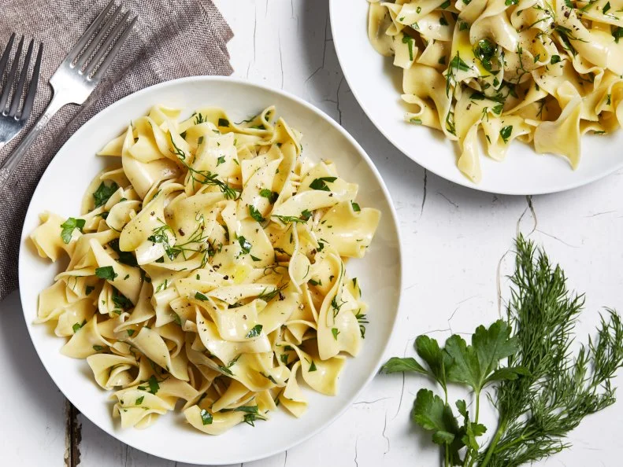

Buttered Egg Noodles
Home

Description
Toss this versatile side dish with fresh parsley and dill.
Ingredients
- Kosher salt and freshly ground black pepper
- One 12-ounce package wide egg noodles
- 6 tablespoons cold unsalted butter, cut into bits
- 2 tablespoons chopped fresh parsley
- 1 tablespoon chopped fresh dill
Steps
- Bring a large pot of salted water to a boil. Add the noodles and cook, stirring occasionally, until al dente, about 5 minutes. Reserve 1/4 cup of the cooking water and then drain the noodles.
- Heat the reserved cooking water and butter together in the pot over medium-low heat, whisking, until smooth and warm. Add the noodles and toss well. Toss in the parsley and dill and season with salt and pepper.